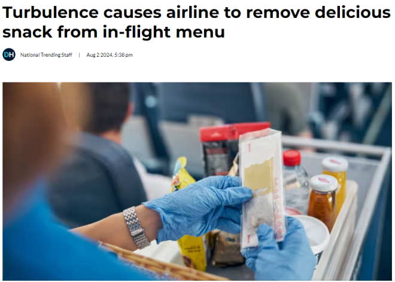
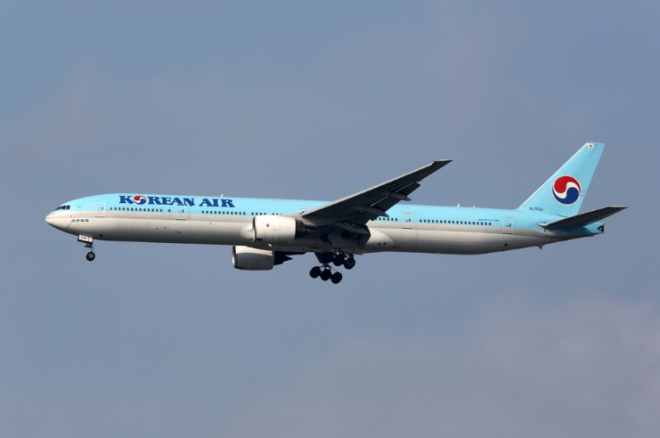

由于担心“湍流”带来的危险，一家航空公司已经将一种深受华人喜爱的小吃从菜单中撤下。
据英文媒体Daily Hive报道，大韩航空将从8月15日起，停止向长途航班经济舱乘客提供方便面。

图源：Daily Hive
该航空公司在一份声明中表示，这一决定是“为了应对大气湍流加剧而采取的安全措施的一部分，旨在防止出现烫伤事故。”
由于方便面需要用开水煮，因此会对乘务员和乘客构成风险。
该航空公司支出，长途航班经济舱的旅客可以享用三明治、玉米热狗肠和其他小吃，而不再提供泡面。

图源：Markus Mainka/Shutterstock
“为了提高乘客满意度和多样化的小吃选择，长途航班上设有自助小吃站，”它补充道。
虽然如此，该航司表示，仍将继续为商务舱和头等舱的乘客提供方便面。
此前，已经有多起报告称，不分航班因乱流导致乘客受重伤、甚至死亡。
5月，一架从伦敦飞往新加坡的新加坡航空公司航班遭遇危险乱流，导致飞机坠毁约7000英尺。该事件导致多人被送往医院，一人死亡。
2022年12月，一架从凤凰城飞往檀香山的航班发生乱流，导致至少36人受伤。
要知道，这些只是近年来经历危险乱流的其中几个例子。
2024年的一项研究发现，飞机每年受到中度至严重乱流的影响超过68,000次。